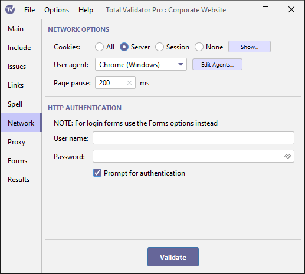

Documentation > Network options
These options affect the HTTP requests and responses when the application communicates with a web server.

Cookies
This option enables you to specify how cookies will be managed by Total Validator. You can specify
whether you want to accept all cookies, including third party cookies (All), only those that
refer to the server that set them (Server),
only session cookies (Session), or ignore all cookies (None).
Cookies that are accepted, or already stored, are sent to the server with the next matching request. They are also stored on disk for the next test run.
You can see which cookies are currently stored using the Show button. A dialog box
will appear that allows you to view and delete individual or groups of cookies, or clear all the cookies
that are stored. Note that session cookies are displayed here for convenience, but these will
not be used when you next run a test.
User agent
By default, Total Validator identifies itself to web servers as TotalValidator/6.0.
This may cause some websites to block access to Total Validator and so stop the testing.
Others may send different web pages depending on what browser or other user-agent accesses them.
If you wish Total Validator to identify itself as a different
user-agent, then select the required identity from the drop down list.
You can amend this list using the Edit Agents button.
This will display a dialog box allowing you to change the list of user agents and
the corresponding user-agent string sent to the web server.
From time to time the list is updated with new releases of Total Validator to reflect the current crop of browsers. Following an upgrade if you wish to use the latest list use the R (Reset) button provided on the edit screen.
Page pause
To minimise the impact of page requests on a web server you can use this option to set the time in milliseconds to pause before retrieving each page. By pausing in this way, the rate of requests hitting the server will be reduced. Often this is used together with the Link pause option to provide the minimum server impact.
When testing the source, or DOM-generated source, of multiple pages using a browser extension, the pause you specify here will occur after each page is loaded rather than before. This is so that this pause may be used to ensure that all the javascript on the page has loaded and executed before testing the DOM-generated source.
HTTP Authentication
Some older websites have secure areas that use BASIC, DIGEST or Windows (NTLM)
authentication to protect them. To test pages
within these areas, enter the required user name and password here.
Note: This is not the same as when a form is displayed to log in. For that you should use the Forms options.
When connecting to a server using Windows (NTLM) authentication you
may need to supply a domain name. In this case enter the domain name
and user name separated by a backslash into the user name field. For
example, MYDOMAIN\myuser.
The password is masked with asterisks when you type it in, but you can use the Show password checkbox to display it.
This password will be stored as plain text when you save your workspace.
To avoid this, you may wish to use Prompt for authentication instead.
Prompt for authentication
Instead of entering the authentication details above, you can choose to be
prompted for them each time they are needed. A dialog
box will be displayed with the page you are trying to access and the realm that it
resides in, prompting you to enter a valid user/password combination.
Any authentication details you enter will be cached in memory until Total Validator is restarted to save you having to enter them more than once.
Note: This option is ignored when using the browser extensions
with the Send DOM or Send source options to prevent pop-ups from appearing for every link on every page.
Instead you must use one of the methods above to ensure that the authentication details are cached first.